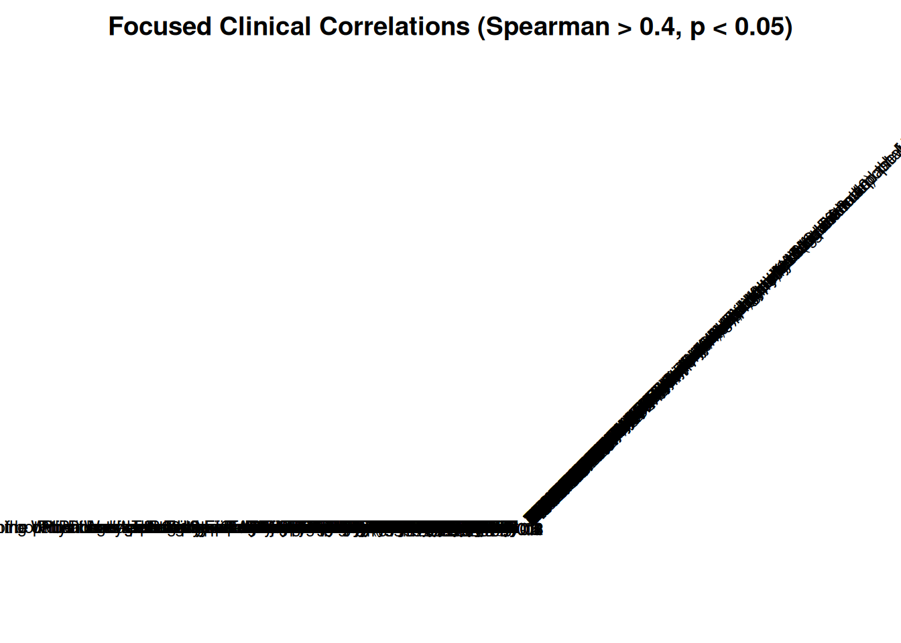

Last updated: 2026-04-10
Checks: 7 0
Knit directory: SSc-USZ/
This reproducible R Markdown analysis was created with workflowr (version 1.7.2). The Checks tab describes the reproducibility checks that were applied when the results were created. The Past versions tab lists the development history.
Great! Since the R Markdown file has been committed to the Git repository, you know the exact version of the code that produced these results.
Great job! The global environment was empty. Objects defined in the global environment can affect the analysis in your R Markdown file in unknown ways. For reproduciblity it’s best to always run the code in an empty environment.
The command set.seed(20260331) was run prior to running
the code in the R Markdown file. Setting a seed ensures that any results
that rely on randomness, e.g. subsampling or permutations, are
reproducible.
Great job! Recording the operating system, R version, and package versions is critical for reproducibility.
Nice! There were no cached chunks for this analysis, so you can be confident that you successfully produced the results during this run.
Great job! Using relative paths to the files within your workflowr project makes it easier to run your code on other machines.
Great! You are using Git for version control. Tracking code development and connecting the code version to the results is critical for reproducibility.
The results in this page were generated with repository version e7fad4e. See the Past versions tab to see a history of the changes made to the R Markdown and HTML files.
Note that you need to be careful to ensure that all relevant files for
the analysis have been committed to Git prior to generating the results
(you can use wflow_publish or
wflow_git_commit). workflowr only checks the R Markdown
file, but you know if there are other scripts or data files that it
depends on. Below is the status of the Git repository when the results
were generated:
Ignored files:
Ignored: .Rhistory
Ignored: .Rproj.user/
Ignored: output/01_data_import_and_qc/
Ignored: output/02_cohort_characterization/
Ignored: output/03a_proteomics_global/
Ignored: output/03b_proteomics_differential/
Ignored: output/03c_proteomics_predictive/
Ignored: renv/library/
Ignored: renv/staging/
Untracked files:
Untracked: analysis/style.css
Unstaged changes:
Modified: analysis/_site.yml
Modified: code/00_config.R
Modified: code/00_omics_engines.R
Note that any generated files, e.g. HTML, png, CSS, etc., are not included in this status report because it is ok for generated content to have uncommitted changes.
These are the previous versions of the repository in which changes were
made to the R Markdown
(analysis/02_cohort_characterization.Rmd) and HTML
(docs/02_cohort_characterization.html) files. If you’ve
configured a remote Git repository (see ?wflow_git_remote),
click on the hyperlinks in the table below to view the files as they
were in that past version.
| File | Version | Author | Date | Message |
|---|---|---|---|---|
| Rmd | e7fad4e | alexander-gysin | 2026-04-10 | wflow_publish("analysis/*.Rmd") |
| Rmd | 083bc85 | alexander-gysin | 2026-04-09 | meta data type, VPA, split the scripts to abcd |
| Rmd | 6324786 | alexander-gysin | 2026-04-07 | migrated back to SC |
| Rmd | 76c931b | alexander-gysin | 2026-04-07 | wflow_git_commit(all = TRUE) |
| html | 76c931b | alexander-gysin | 2026-04-07 | wflow_git_commit(all = TRUE) |
| html | ec8f4ac | alexander-gysin | 2026-04-05 | Build site. |
| html | c18fa49 | alexander-gysin | 2026-04-03 | Build site. |
| Rmd | 1208116 | alexander-gysin | 2026-04-03 | finished characterization |
Setup and import
- Loaded required utility packages (tidyverse, gtsummary, corrplot, heatmaply, etc.).
- Created dynamic output directories to safely store Script 02 results and figures.
- Sourced global configurations and loaded the clinical spine generated in Script 01.
library(tidyverse)
library(data.table)
library(lubridate) # Crucial for the date math you requested
library(gtsummary) # The Table 1 engine
library(here)
library(patchwork)
library(ggpubr)
library(gt)
library(kableExtra)
library(corrplot)
library(heatmaply)
# Knitr Config
knitr::opts_chunk$set(
warning = FALSE,
message = FALSE
)
# Output paths
current_file <- "02_cohort_characterization"
output_dir_data <- here::here("output", current_file)
if (!dir.exists(output_dir_data)) dir.create(output_dir_data, recursive = TRUE)
# Load global configuration (colors, groups)
source(here::here("code", "00_config.R"))Loading Global Configuration...
Configuration Successfully Loaded!# Load the clinical spine from Script 01
master_spine <- readRDS(here::here("output", "01_data_import_and_qc", "clinical_spine.rds"))Configuration
- Defined statistical thresholds for normality (Shapiro-Wilk) and variance (Bartlett) testing.
- Configured correlation matrix parameters including sparsity filters, p-value limits, and correlation strength cutoffs.
- Engineered core clinical features including calculated Age, Sample Storage Time, and standardized numeric lab values (CRP, Creatinine).
- Constructed dynamic configuration lists to dictate Table 1 and Figure layouts.
# 1. Global Variables & Feature Engineering ------------------------------------
olink_date <- as.Date("2026-03-30")
default_control_date <- as.Date("2024-01-01")
stat_config <- list(
shapiro_alpha = 0.05,
variance_alpha = 0.05,
p_cutoff = 0.05
)
# Matrix Correlation Configuration
corr_config <- list(
min_required_obs = 10, # Sparsity filter: drop columns with < 10 valid observations
p_cutoff = 0.05, # Global significance threshold
rho_cutoff = 0.4 # Focused Heatmap threshold (only keep variables with at least one |rho| >= 0.4)
)
# Helper function to determine parametric status (DRY principle)
check_parametric <- function(df, var_col, group_col, config, transform = NULL) {
test_vec <- df[[var_col]][!is.na(df[[var_col]])]
group_vec <- df[[group_col]][!is.na(df[[var_col]])]
if (length(unique(group_vec)) < 2 || length(test_vec) < 3) return(FALSE)
if (!is.null(transform) && transform == "log10") {
valid_idx <- test_vec > 0
test_vec <- log10(test_vec[valid_idx])
group_vec <- group_vec[valid_idx]
if (length(unique(group_vec)) < 2 || length(test_vec) < 3) return(FALSE)
}
shapiro_p <- tryCatch(shapiro.test(test_vec)$p.value, error = function(e) 0)
bartlett_p <- tryCatch(bartlett.test(test_vec ~ group_vec)$p.value, error = function(e) 0)
return(shapiro_p > config$shapiro_alpha && bartlett_p > config$variance_alpha)
}
# Clean and calculate features
clean_spine <- master_spine %>%
mutate(
Birth_Year = as.numeric(trimws(Geburtsdatum)),
Entnahmedatum_Clean = case_when(
!is.na(Entnahmedatum) ~ as.Date(Entnahmedatum),
is.na(Entnahmedatum) & cohort_group == GRP_CONTROL ~ default_control_date,
TRUE ~ NA_Date_
),
Age = year(Entnahmedatum_Clean) - Birth_Year,
Sample_Age_Years = as.numeric(difftime(olink_date, Entnahmedatum_Clean, units = "days")) / 365.25,
Sex = case_when(
Geschlecht == "weiblich" ~ "Female",
Geschlecht == "männlich" ~ "Male",
TRUE ~ NA_character_
),
Creatinine = as.numeric(gsub(",", ".", `OR serum creatinine (micromoles/L)`)),
CRP = as.numeric(gsub(",", ".", `CRP (mg/dl)`)),
CRP = if_else(CRP <= 0, NA_real_, CRP),
cohort_group = factor(cohort_group, levels = c(GRP_ACTIVE, GRP_NON_ACTIVE, GRP_CONTROL))
)
# 2. Table Configurations ------------------------------------------------------
table_configs <- list(
table_1 = list(
title = "Baseline Demographics and Clinical Characteristics",
group_by = "cohort_group",
pairwise = TRUE, # Trigger pairwise columns in the table engine
variables = c("Age", "Sex", "CRP", "Creatinine", "Sample_Age_Years"),
labels = list(
Age = "Patient Age (Years)",
Sex = "Biological Sex",
CRP = "CRP (mg/dl)",
Creatinine = "Serum Creatinine (µmol/L)",
Sample_Age_Years = "Sample Storage Time (Years)"
)
)
)
# 3. Figure Configurations -----------------------------------------------------
figure_configs <- list(
figure_1 = list(
figure_title = "Baseline Clinical Distributions",
plots = list(
plot_1 = list(
title = "Age and Sex Distribution",
type = "stacked_histogram",
x_var = "Age",
fill_var = "Sex",
fill_palette = get_project_colors(c(SEX_FEMALE, SEX_MALE)), # Uses the unified dictionary
facet_by = "cohort_group",
bins = 10
),
plot_4 = list(
title = "Sample Storage Age",
type = "violin",
y_var = "Sample_Age_Years",
x_var = "cohort_group",
y_transform = NULL,
y_label = "Sample Storage Time (Years)",
add_stat_test = TRUE,
pairwise = TRUE
)
)
),
figure_2 = list(
figure_title = "Baseline Laboratory Values",
plots = list(
plot_2 = list(
title = "Baseline CRP",
type = "violin",
y_var = "CRP",
x_var = "cohort_group",
y_transform = "log10",
y_label = "CRP (mg/dl) [Log10 Scale]",
add_stat_test = TRUE,
pairwise = TRUE
),
plot_3 = list(
title = "Baseline Creatinine",
type = "violin",
y_var = "Creatinine",
x_var = "cohort_group",
y_transform = "log10",
y_label = "Serum Creatinine (µmol/L) [Log10 Scale]",
add_stat_test = TRUE,
pairwise = TRUE
)
)
)
)
cat("Cohort Feature Engineering and Configurations Loaded.\n")Cohort Feature Engineering and Configurations Loaded.Table Engine
- Dynamically evaluated each clinical variable to select appropriate parametric (ANOVA/t-test) or non-parametric (Kruskal-Wallis/Wilcoxon) statistical tests.
- Generated comprehensive baseline demographic tables using the gtsummary package.
- Calculated and appended both global and pairwise group comparison p-values.
- Exported standard tables as CSV files and rendered interactive HTML equivalents.
cat("### Generating Tables & Statistical Summaries\n\n")Generating Tables & Statistical Summaries
generated_tables <- list()
for (tbl_name in names(table_configs)) {
conf <- table_configs[[tbl_name]]
cat(sprintf("#### Building: %s\n", conf$title))
tbl_data <- clean_spine %>% select(all_of(c(conf$variables, conf$group_by)))
gtsum_stats <- list()
gtsum_global_tests <- list()
gtsum_pairwise_tests <- list()
for (var in conf$variables) {
if (is.numeric(tbl_data[[var]])) {
is_parametric <- check_parametric(tbl_data, var, conf$group_by, stat_config, transform = NULL)
if (is_parametric) {
gtsum_stats[[var]] <- "{mean} ({sd})"
gtsum_global_tests[[var]] <- "aov"
gtsum_pairwise_tests[[var]] <- "t.test"
} else {
gtsum_stats[[var]] <- "{median} ({p25}, {p75})"
gtsum_global_tests[[var]] <- "kruskal.test"
gtsum_pairwise_tests[[var]] <- "wilcox.test"
}
}
}
# Step 1. Generate the Master Global Table
tbl_global <- tbl_data %>%
tbl_summary(
by = all_of(conf$group_by),
statistic = gtsum_stats,
missing = "ifany",
missing_text = "Missing (NA)"
) %>%
add_p(test = gtsum_global_tests) %>%
modify_header(p.value = "**Global p-value**")
# Step 2. If pairwise requested, dynamically loop and merge paired p-values
if (isTRUE(conf$pairwise)) {
valid_groups <- tbl_data %>%
group_by(!!sym(conf$group_by)) %>%
summarise(n = n(), .groups = "drop") %>%
filter(n >= 2) %>%
pull(!!sym(conf$group_by)) %>%
as.character()
all_comparisons <- combn(valid_groups, 2, simplify = FALSE)
pairwise_tbls <- list()
for (comp in all_comparisons) {
comp_data <- tbl_data %>%
filter(!!sym(conf$group_by) %in% comp) %>%
mutate(!!sym(conf$group_by) := droplevels(factor(!!sym(conf$group_by))))
ptbl <- comp_data %>%
tbl_summary(
by = all_of(conf$group_by),
statistic = gtsum_stats,
missing = "no"
) %>%
add_p(test = gtsum_pairwise_tests) %>%
modify_header(p.value = sprintf("**%s vs %s**", comp[1], comp[2])) %>%
modify_column_hide(all_stat_cols())
pairwise_tbls <- append(pairwise_tbls, list(ptbl))
}
gtsum_obj <- tbl_merge(
tbls = append(list(tbl_global), pairwise_tbls),
tab_spanner = FALSE
)
} else {
gtsum_obj <- tbl_global
}
# Step 3. Apply final universal formatting
gtsum_obj <- gtsum_obj %>%
bold_labels() %>%
modify_header(label = "**Variable**") %>%
modify_caption(conf$title)
# Step 4. Export CSV
export_df <- as_tibble(gtsum_obj)
write_csv(export_df, file.path(output_dir_data, paste0(tbl_name, ".csv")))
# Step 5. Rendering for HTML (Using kableExtra to bypass the black-on-black bug)
tbl_html <- as_kable_extra(gtsum_obj, format = "html") %>%
kable_styling(
bootstrap_options = c("hover", "condensed"),
full_width = FALSE,
position = "left"
) %>%
row_spec(0, extra_css = "white-space: nowrap;")
print(tbl_html)
cat("\n---\n\n")
# Save the full object to our list for potential downstream use
generated_tables[[tbl_name]] <- gtsum_obj
}Building: Baseline Demographics and Clinical Characteristics
| Variable |
Active N = 48 |
Non-Active N = 48 |
Control N = 35 |
Global p-value | Active vs Non-Active | Active vs Control | Non-Active vs Control |
|---|---|---|---|---|---|---|---|
| Age | 62 (48, 74) | 62 (48, 70) | 57 (49, 65) | 0.5 | 0.9 | 0.3 | 0.3 |
| Sex | >0.9 | >0.9 | >0.9 | >0.9 | |||
| Female | 38 (79%) | 38 (79%) | 28 (80%) | ||||
| Male | 10 (21%) | 10 (21%) | 7 (20%) | ||||
| CRP | 0.21 (0.06, 0.79) | 0.13 (0.06, 0.26) | NA (NA, NA) | 0.009 | 0.010 | ||
| Missing (NA) | 0 | 2 | 35 | ||||
| Creatinine | 70 (62, 87) | 68 (61, 81) | NA (NA, NA) | 0.7 | 0.7 | ||
| Missing (NA) | 2 | 2 | 35 | ||||
| Sample_Age_Years | 1.14 (0.80, 1.47) | 1.36 (1.04, 1.61) | 1.17 (0.99, 1.20) | 0.026 | 0.12 | 0.5 | 0.004 |
| 1 Median (Q1, Q3); n (%) | |||||||
| 2 Kruskal-Wallis rank sum test; Pearson’s Chi-squared test | |||||||
| 3 Wilcoxon rank sum test; Pearson’s Chi-squared test | |||||||
| 4 Wilcoxon rank sum test; Pearson’s Chi-squared test; NA |
Figure Engine
- Generated dynamic clinical visualizations (stacked histograms, violin plots) based on the configuration dictionary.
- Automatically applied appropriate parametric or non-parametric pairwise statistical comparisons to the plots.
- Assembled individual plots into comprehensive multi-panel figure layouts using patchwork.
cat("### Generating Clinical Visualizations\n")### Generating Clinical Visualizationsgroup_levels <- levels(clean_spine$cohort_group)
plot_colors <- get_project_colors(group_levels) # Uses the unified dictionary
individual_plots <- list()
stitched_figures <- list()
generate_base_plot <- function(conf) {
if (conf$type == "stacked_histogram") {
hist_bins <- if (!is.null(conf$bins)) conf$bins else 30
p <- ggplot(clean_spine, aes(x = .data[[conf$x_var]], fill = .data[[conf$fill_var]])) +
geom_histogram(bins = hist_bins, color = "white", alpha = 0.8) +
scale_fill_manual(values = conf$fill_palette) +
labs(title = conf$title, x = conf$x_var, y = "Count", fill = conf$fill_var)
if (!is.null(conf$facet_by)) {
p <- p + facet_wrap(vars(!!sym(conf$facet_by)))
}
} else if (conf$type == "violin") {
plot_data <- clean_spine %>% filter(!is.na(.data[[conf$y_var]]))
actual_y_label <- if (!is.null(conf$y_label)) conf$y_label else conf$y_var
p <- ggplot(plot_data, aes(x = .data[[conf$x_var]], y = .data[[conf$y_var]])) +
geom_violin(aes(fill = .data[[conf$x_var]]), alpha = 0.4, color = "transparent") +
geom_boxplot(width = 0.2, fill = "white", color = "grey30", outlier.shape = NA) +
geom_jitter(aes(color = .data[[conf$x_var]]), width = 0.15, alpha = 0.6) +
scale_fill_manual(values = plot_colors) +
scale_color_manual(values = plot_colors) +
labs(title = conf$title, x = "Cohort Group", y = actual_y_label) +
theme(legend.position = "none")
if (!is.null(conf$y_transform) && conf$y_transform == "log10") {
p <- p + scale_y_log10(expand = expansion(mult = c(0.05, 0.40)))
} else {
p <- p + scale_y_continuous(expand = expansion(mult = c(0.05, 0.40)))
}
if (isTRUE(conf$add_stat_test)) {
is_parametric <- check_parametric(plot_data, conf$y_var, conf$x_var, stat_config, transform = conf$y_transform)
dyn_pairwise_method <- if (is_parametric) "t.test" else "wilcox.test"
dyn_global_method <- if (is_parametric) "anova" else "kruskal.test"
if (isTRUE(conf$pairwise)) {
valid_groups <- plot_data %>%
group_by(!!sym(conf$x_var)) %>%
summarise(n = n(), .groups = "drop") %>%
filter(n >= 2) %>%
pull(!!sym(conf$x_var)) %>%
as.character()
if (length(valid_groups) >= 2) {
all_comparisons <- combn(valid_groups, 2, simplify = FALSE)
sig_comparisons <- list()
for (comp in all_comparisons) {
g1 <- plot_data[[conf$y_var]][plot_data[[conf$x_var]] == comp[1]]
g2 <- plot_data[[conf$y_var]][plot_data[[conf$x_var]] == comp[2]]
if (length(g1) >= 2 && length(g2) >= 2) {
if (!is.null(conf$y_transform) && conf$y_transform == "log10") {
g1 <- log10(g1[g1 > 0])
g2 <- log10(g2[g2 > 0])
}
p_val <- tryCatch({
if (dyn_pairwise_method == "t.test") {
t.test(g1, g2)$p.value
} else {
wilcox.test(g1, g2, exact = FALSE)$p.value
}
}, error = function(e) 1)
if (isTRUE(p_val < stat_config$p_cutoff)) {
sig_comparisons <- append(sig_comparisons, list(comp))
}
}
}
if (length(sig_comparisons) > 0) {
p <- p + stat_compare_means(
comparisons = sig_comparisons,
method = dyn_pairwise_method,
label = "p.signif",
hide.ns = TRUE,
step.increase = 0.1
)
}
}
} else {
p <- p + stat_compare_means(method = dyn_global_method, label.y.npc = "top")
}
}
}
p <- p + theme_project_base()
return(p)
}
for (fig_name in names(figure_configs)) {
fig_conf <- figure_configs[[fig_name]]
patchwork_ready_plots <- list()
plot_names <- names(fig_conf$plots)
for (i in seq_along(plot_names)) {
p_name <- plot_names[i]
p_conf <- fig_conf$plots[[p_name]]
pure_plot <- generate_base_plot(p_conf)
individual_plots[[p_name]] <- pure_plot
abc_title <- sprintf("%s. %s", LETTERS[i], p_conf$title)
patchwork_ready_plots[[i]] <- pure_plot + labs(title = abc_title)
}
stitched_figures[[fig_name]] <- wrap_plots(patchwork_ready_plots, ncol = 2) +
plot_annotation(title = fig_conf$figure_title, theme = theme(plot.title = element_text(size = 16, face = "bold")))
}Merged Figures
- Rendered the assembled multi-panel figures for the HTML report.
- Exported high-resolution PNG copies of the merged figures to the output directory.
# This chunk handles the large patchwork layouts
for (fig_name in names(stitched_figures)) {
print(stitched_figures[[fig_name]])
ggsave(
filename = file.path(output_dir_data, paste0(fig_name, ".png")),
plot = stitched_figures[[fig_name]],
width = 12, height = 8, dpi = 300, bg = "white"
)
}

Individual Plots
- Generated tabbed sections in the HTML report for easy navigation of individual plots.
- Exported standalone high-resolution PNGs for each individual plot.
# This chunk handles the individual plots inside the tabset
for (p_name in names(individual_plots)) {
# Extract the plot title to use as the tab name
tab_title <- individual_plots[[p_name]]$labels$title
if (is.null(tab_title)) tab_title <- p_name
# Dynamically generate the ### Tab Header
cat(sprintf("\n\n### %s\n\n", tab_title))
# Print the smaller standalone plot
print(individual_plots[[p_name]])
cat("\n\n")
ggsave(
filename = file.path(output_dir_data, paste0(p_name, ".png")),
plot = individual_plots[[p_name]],
width = 7, height = 5.5, dpi = 300, bg = "white"
)
}Age and Sex Distribution

Sample Storage Age

Baseline CRP

Baseline Creatinine

Matrix Correlation
Factor Exploration
- Scanned all factor variables to identify their category distributions and assess variance.
- Filtered out cleanly binarized variables to reduce noise.
- Generated an audit table grouping remaining factors by level counts (>2 levels, exactly 2 non-standard levels, or 0 variance) to guide manual binarization.
cat("\n### Factor Exploration Report\n\n")
### Factor Exploration Report# Helper function to calculate level percentages safely
get_level_pct <- function(vec) {
vec <- vec[!is.na(vec)]
if(length(vec) == 0) return("All NA")
# Calculate percentages
tbl <- prop.table(table(vec)) * 100
# Format as "Level: 45.2%"
level_strings <- paste0(names(tbl), ": ", sprintf("%.1f%%", tbl))
return(paste(level_strings, collapse = " <br> ")) # Use HTML break for table formatting
}
# Initialize empty dataframe for the table
exploration_df <- data.frame(
Variable = character(),
Category = character(),
Distribution = character(),
stringsAsFactors = FALSE
)
# Loop through every column in the dataframe
for (col in names(master_spine)) {
vec <- master_spine[[col]]
# Check if it's a factor
if (is.factor(vec)) {
clean_vec <- vec[!is.na(vec)]
unique_levels <- unique(as.character(clean_vec))
n_levels <- length(unique_levels)
dist_str <- get_level_pct(vec)
cat_name <- NA
# CATEGORY 3: 1 or 0 levels (Zero Variance)
if (n_levels <= 1) {
cat_name <- "3: Zero Variance (<= 1 Level)"
# CATEGORY 1: More than 2 levels
} else if (n_levels > 2) {
cat_name <- "1: > 2 Levels (Needs Bucketing/Exclusion)"
# CATEGORY 2: Exactly 2 Levels (Check if they are NOT 1/0 or Yes/No)
} else if (n_levels == 2) {
lower_levels <- tolower(unique_levels)
# We ignore factors that are already cleanly binarized into 1/0 or yes/no
is_strict_binary <- all(lower_levels %in% c("yes", "no", "1", "0"))
if (!is_strict_binary) {
cat_name <- "2: Exactly 2 Levels (Needs Manual 1/0 Mapping)"
}
}
# Append to dataframe if it falls into one of our target categories
if (!is.na(cat_name)) {
exploration_df <- rbind(exploration_df, data.frame(
Variable = col,
Category = cat_name,
Distribution = dist_str,
stringsAsFactors = FALSE
))
}
}
}
# --- PRINT THE HTML TABLE ---
if(nrow(exploration_df) > 0) {
exploration_df %>%
arrange(Category, Variable) %>%
kableExtra::kbl(format = "html", escape = FALSE, caption = "Variables Requiring Binarization Attention") %>%
kableExtra::kable_styling(bootstrap_options = c("striped", "hover", "condensed"), full_width = FALSE, position = "left") %>%
kableExtra::column_spec(1, bold = TRUE) %>%
kableExtra::collapse_rows(columns = 2, valign = "top") # Groups the categories visually
} else {
cat("**Result:** All factor variables are cleanly binary (1/0) and ready for the correlation matrix!\n\n")
}| Variable | Category | Distribution |
|---|---|---|
| ACTIVE_AI | 1: > 2 Levels (Needs Bucketing/Exclusion) |
-1: 26.7% 0: 48.1% 1: 25.2% |
| Capillary loss |
Extensive: 6.6% Moderate: 25.3% None: 29.7% Rare: 38.5% |
|
| Digital ulcer |
Current: 18.8% Never: 56.2% Previously: 25.0% |
|
| Dyspnea NYHA Stage |
0: 19.8% 1: 14.0% I: 41.9% II: 20.9% III: 3.5% |
|
| Giant capillaries |
Extensive: 2.2% Moderate: 6.7% None: 41.1% Rare: 50.0% |
|
| Hemorrhages |
Moderate: 5.6% None: 40.4% Rare: 53.9% |
|
| Pitting scars on finger tips |
Current: 46.2% Never: 48.4% Previously: 5.4% |
|
| Ramified bushy capillaries |
Moderate: 14.3% None: 22.0% Rare: 63.7% |
|
| Skin thickening of the fingers of both hands extending proximal to the MCP joints |
Current: 23.7% Never: 66.7% Previously: 9.7% |
|
| Subsets of SSc according to LeRoy (1988): |
Diffuse cutaneous SSc: 21.6% Limited cutaneous SSc: 43.2% Sine scleroderma: 35.1% |
|
| VisitNumber |
Follow Up Visit (1): 73.4% Follow Up Visit (2): 25.5% Visit 0: 1.1% |
|
| Gangrene | 2: Exactly 2 Levels (Needs Manual 1/0 Mapping) |
Never: 96.7% Previously: 3.3% |
| Geschlecht |
männlich: 20.6% weiblich: 79.4% |
|
| Sex |
Female: 79.4% Male: 20.6% |
|
| SiteNumber |
6: 97.9% manual: 2.1% |
|
| ANA positivity | 3: Zero Variance (<= 1 Level) | 1: 100.0% |
| Buffy-coat | 1: 100.0% | |
| DLCO (SB) (% predicted) performed? | 1: 100.0% | |
| DLCO/VA (% predicted) performed? | 1: 100.0% | |
| Forced Vital Capacity (FVC- % predicted) performed ? | 1: 100.0% | |
| Left ventricular ejection fraction %? | 1: 100.0% | |
| Myositis antibodies positivity | 0: 100.0% | |
| Patients eligible | 1: 100.0% | |
| Right atrium area? | 1: 100.0% | |
| Right ventricular area? | 1: 100.0% | |
| SELECTED | 1: 100.0% | |
| Tricuspid regurgitation velocity? | 0: 100.0% |
Data Prep for Matrix Correlation
- Conducted a pre-scan of factor variables to log any unrecognized text levels, preventing silent data loss.
- One-hot encoded nominal disease subset categories into distinct binary columns.
- Applied a Universal Dictionary to translate ordinal factors (e.g., severity, smoking status) and binary text into continuous numerical ranks.
- Safely excluded unmapped levels and non-numeric columns (e.g., Dates, IDs) to produce a mathematically pure numeric matrix.
# ----------------------------------------------------------------------------
# STEP 0: PRE-SCAN & UNMAPPED LEVEL REPORT
# ----------------------------------------------------------------------------
# Define the exact text strings our dictionary knows how to translate
known_levels <- c(
"1", "0",
"weiblich", "female", "männlich", "male",
"manual", "6",
"never", "previously", "current",
"none", "rare", "moderate", "extensive",
"0", "1", "i", "ii", "iii",
"visit 0", "follow up visit (1)", "follow up visit (2)"
)
unmapped_log <- list()
# Scan the dataset to see what will fall into the Safety Net
for (col in names(master_spine)) {
if (is.factor(master_spine[[col]]) && col != "Subsets of SSc according to LeRoy (1988):") {
# Extract unique actual values (ignoring NAs) and lowercase them
actual_vals <- tolower(unique(as.character(master_spine[[col]])))
actual_vals <- actual_vals[!is.na(actual_vals)]
# Find which ones are NOT in our known dictionary
unmapped_vals <- setdiff(actual_vals, known_levels)
if (length(unmapped_vals) > 0) {
unmapped_log[[col]] <- unmapped_vals
}
}
}
# Print the Audit Report
cat("### Safety Net Audit: Unmapped Levels -> NA ###\n\n")### Safety Net Audit: Unmapped Levels -> NA ###if (length(unmapped_log) > 0) {
cat("The following levels were not found in the dictionary and will be converted to NA:\n\n")
for (col in names(unmapped_log)) {
cat(sprintf(" * **%s**: ['%s']\n", col, paste(unmapped_log[[col]], collapse = "', '")))
}
} else {
cat(" * Perfect match! No unexpected levels were found in the dataset.\n")
}The following levels were not found in the dictionary and will be converted to NA:
* **ACTIVE_AI**: ['-1']cat("\n---\n\n")
---# ----------------------------------------------------------------------------
# STEP 1 & 2: TRANSLATION & FILTERING
# ----------------------------------------------------------------------------
cor_data <- master_spine %>%
# We manually split the un-ordered disease subset into 3 binary columns.
mutate(
Subset_Diffuse = if_else(`Subsets of SSc according to LeRoy (1988):` == "diffuse cutaneous", 1, 0),
Subset_Limited = if_else(`Subsets of SSc according to LeRoy (1988):` == "limited cutaneous", 1, 0),
Subset_Sine = if_else(`Subsets of SSc according to LeRoy (1988):` == "sine scleroderma", 1, 0)
) %>%
# Drop the original text column so it doesn't break the matrix math
select(-`Subsets of SSc according to LeRoy (1988):`) %>%
# This targets EVERY remaining factor in the dataset.
mutate(across(where(is.factor), ~ {
val <- tolower(as.character(.x))
num_val <- case_when(
val == "1" ~ 1,
val == "0" ~ 0,
val %in% c("weiblich", "female") ~ 1,
val %in% c("männlich", "male") ~ 0,
val == "manual" ~ 1,
val == "6" ~ 0,
val == "never" ~ 0,
val == "previously" ~ 1,
val == "current" ~ 2,
val == "none" ~ 0,
val == "rare" ~ 1,
val == "moderate" ~ 2,
val == "extensive" ~ 3,
val == "0" ~ 0,
val %in% c("1", "i") ~ 1,
val == "ii" ~ 2,
val == "iii" ~ 3,
val == "visit 0" ~ 0,
val == "follow up visit (1)" ~ 1,
val == "follow up visit (2)" ~ 2,
# THE SAFETY NET
TRUE ~ NA_real_
)
return(num_val)
}))
# ----------------------------------------------------------------------------
# STEP 3: NON-NUMERIC EXCLUSION REPORT
# ----------------------------------------------------------------------------
# Find all columns that are NOT numeric (e.g., Dates, Subject IDs, raw text notes)
non_numeric_cols <- names(cor_data)[!sapply(cor_data, is.numeric)]
cat("### Safety Net Audit: Excluded Non-Numeric Columns ###\n\n")### Safety Net Audit: Excluded Non-Numeric Columns ###if (length(non_numeric_cols) > 0) {
cat("The following columns remain non-numeric and will be excluded from the correlation matrix:\n\n")
for (col in non_numeric_cols) {
cat(sprintf(" * %s\n", col))
}
} else {
cat(" * All columns are numeric! Nothing was dropped.\n")
}The following columns remain non-numeric and will be excluded from the correlation matrix:
* Subject_ID
* cohort_group
* inCentraxx
* ...1
* SubjectNumber
* Visit Date
* Entnahmedatum
* Einlagerungsdatum
* If yes, Date of HRCT
* Date of PFT
* If yes, Date of assessment for ECG
* If yes, Date of assessment for ECHO
* If, yes Date of assessment for Walk test
* onset_nonRP
* Unique Sample ID
(for letters standard A-Z only)
* Subject-ID (EUSTAR)
* Entnahmedatum_Cleancat("\n---\n\n")
---# Final check: Keep only numeric columns for the correlation matrix
cor_data <- cor_data %>% select(where(is.numeric))
cat("**Success:** Data successfully binarized and converted to continuous ordinal ranks!\n")**Success:** Data successfully binarized and converted to continuous ordinal ranks!Matrix Correlation
- Applied a sparsity filter to exclude clinical variables with fewer than 10 valid observations.
- Calculated a robust pairwise Spearman correlation matrix, gracefully handling ‘zero standard deviation’ errors and ties.
- Generated an interactive, full-dataset heatmap using heatmaply for deep exploratory data analysis.
- Extracted a highly focused static heatmap (corrplot) showing only significant correlations exceeding the defined strength threshold, automatically exported for presentations.
cat("### Clinical Spearman Correlation Matrix\n\n")### Clinical Spearman Correlation Matrix# Apply Parameterized Sparsity Rule
min_obs <- corr_config$min_required_obs
valid_counts <- colSums(!is.na(cor_data))
valid_col_names <- names(valid_counts)[valid_counts >= min_obs]
dropped_sparse <- names(valid_counts)[valid_counts < min_obs]
if (length(dropped_sparse) > 0) {
cat("\n#### Dropped due to extreme sparsity (<", min_obs, " observations) ####\n")
for(col in dropped_sparse) cat(sprintf(" * %s\n", col))
}
#### Dropped due to extreme sparsity (< 10 observations) ####
* ANA positivity
* SSc-specific antibodies positivity
* Other anti-nuclear antibodies positivity
* Other antibodies positivity
* Myositis antibodies positivity
* Tricuspid regurgitation velocity?cor_data <- cor_data %>% select(all_of(valid_col_names))
cat("\n---\n\n")
---# ----------------------------------------------------------------------------
# Run Matrix Math
# ----------------------------------------------------------------------------
cat("\nCalculating robust pairwise correlations...\n")
Calculating robust pairwise correlations...cor_matrix <- cor(cor_data, use = "pairwise.complete.obs", method = "spearman")
robust_cor_mtest <- function(mat) {
n <- ncol(mat)
p_mat <- matrix(1, n, n)
colnames(p_mat) <- rownames(p_mat) <- colnames(mat)
for (i in 1:(n - 1)) {
for (j in (i + 1):n) {
p_val <- suppressWarnings(
tryCatch({
cor.test(mat[[i]], mat[[j]], method = "spearman", exact = FALSE)$p.value
}, error = function(e) 1)
)
p_mat[i, j] <- p_mat[j, i] <- p_val
}
}
return(p_mat)
}
p_matrix <- robust_cor_mtest(cor_data)
# Parameterized Masking and Safety Nets
p_matrix[is.na(p_matrix)] <- 1
cor_matrix[is.na(cor_matrix)] <- 0
col_palette <- colorRampPalette(c(HM_Z_LOW, HM_Z_MID, HM_Z_HIGH))(200)
# ----------------------------------------------------------------------------
# 1. Interactive HTML Heatmap (FULL DATASET)
# ----------------------------------------------------------------------------
cat("\n#### 1. Interactive Full Heatmap\n")
#### 1. Interactive Full Heatmapcat("Hover over squares to explore specific correlation values and parameters. Non-significant relationships are masked.\n\n")Hover over squares to explore specific correlation values and parameters. Non-significant relationships are masked.# Mask insignificant values with NA for interactive display
masked_cor <- cor_matrix
masked_cor[p_matrix >= corr_config$p_cutoff] <- NA
tryCatch({
p_interactive <- heatmaply_cor(
masked_cor,
colors = col_palette,
showticklabels = c(FALSE, FALSE), # Hides the crushed axis text
k_row = 4, k_col = 4, # Draws boxes to highlight main clusters
main = sprintf("Interactive Full Matrix (p < %s)", corr_config$p_cutoff),
margins = c(10, 10, 30, 10)
)
print(p_interactive)
}, error = function(e) cat("Interactive heatmap could not be generated in this environment.\n"))Interactive heatmap could not be generated in this environment.cat("\n---\n\n")
---# ----------------------------------------------------------------------------
# 2. Static PNG Heatmap (FOCUSED DATASET)
# ----------------------------------------------------------------------------
cat("\n#### 2. Focused Heatmap (Highlight Reel)\n")
#### 2. Focused Heatmap (Highlight Reel)cat(sprintf("Showing only variables with at least one off-diagonal correlation > %s (p < %s).\n\n",
corr_config$rho_cutoff, corr_config$p_cutoff))Showing only variables with at least one off-diagonal correlation > 0.4 (p < 0.05).# Logical filter: Is abs(correlation) >= threshold AND is it significant?
sig_strong_logic <- (abs(cor_matrix) >= corr_config$rho_cutoff) & (p_matrix < corr_config$p_cutoff)
diag(sig_strong_logic) <- FALSE # We don't care about self-correlation (which is always 1.0)
# Keep variables that have at least one TRUE in their row/column
keep_vars <- rowSums(sig_strong_logic) > 0
if (sum(keep_vars) >= 2) {
cor_matrix_filt <- cor_matrix[keep_vars, keep_vars]
p_matrix_filt <- p_matrix[keep_vars, keep_vars]
# Print the focused plot to the HTML document
corrplot(
cor_matrix_filt,
method = "color",
type = "upper",
order = "hclust",
hclust.method = "ward.D2",
col = col_palette,
tl.col = "black",
tl.cex = 0.8,
tl.srt = 45,
p.mat = p_matrix_filt,
sig.level = corr_config$p_cutoff,
insig = "blank",
diag = FALSE,
mar = c(0, 0, 2, 0),
title = sprintf("Focused Clinical Correlations (Spearman > %s, p < %s)", corr_config$rho_cutoff, corr_config$p_cutoff)
)
# Save the High-Res Image for PowerPoint
png(file.path(output_dir_data, "Focused_Clinical_Correlation_Matrix.png"), width = 12, height = 12, units = "in", res = 300)
corrplot(
cor_matrix_filt, method = "color", type = "upper", order = "hclust", hclust.method = "ward.D2",
col = col_palette, tl.col = "black", tl.cex = 0.9, tl.srt = 45, p.mat = p_matrix_filt,
sig.level = corr_config$p_cutoff, insig = "blank", diag = FALSE, mar = c(0, 0, 2, 0),
title = sprintf("Focused Clinical Correlations (Spearman > %s, p < %s)", corr_config$rho_cutoff, corr_config$p_cutoff)
)
dev.off()
cat("**Success:** Focused PNG saved to output folder.\n")
} else {
cat("**Result:** No variables met the focused correlation threshold. Static plot not generated.\n")
}
**Success:** Focused PNG saved to output folder.cat("Script 02 Complete!")Script 02 Complete!
sessionInfo()R version 4.5.2 (2025-10-31)
Platform: x86_64-pc-linux-gnu
Running under: Ubuntu 24.04.3 LTS
Matrix products: default
BLAS: /usr/lib/x86_64-linux-gnu/openblas-pthread/libblas.so.3
LAPACK: /usr/lib/x86_64-linux-gnu/openblas-pthread/libopenblasp-r0.3.26.so; LAPACK version 3.12.0
locale:
[1] LC_CTYPE=en_US.UTF-8 LC_NUMERIC=C
[3] LC_TIME=en_US.UTF-8 LC_COLLATE=en_US.UTF-8
[5] LC_MONETARY=en_US.UTF-8 LC_MESSAGES=en_US.UTF-8
[7] LC_PAPER=en_US.UTF-8 LC_NAME=C
[9] LC_ADDRESS=C LC_TELEPHONE=C
[11] LC_MEASUREMENT=en_US.UTF-8 LC_IDENTIFICATION=C
time zone: Etc/UTC
tzcode source: system (glibc)
attached base packages:
[1] stats graphics grDevices datasets utils methods base
other attached packages:
[1] heatmaply_1.6.0 viridis_0.6.5 viridisLite_0.4.3
[4] plotly_4.12.0 corrplot_0.95 kableExtra_1.4.0
[7] gt_1.3.0 ggpubr_0.6.3 patchwork_1.3.2
[10] here_1.0.2 gtsummary_2.5.0 data.table_1.18.2.1
[13] lubridate_1.9.5 forcats_1.0.1 stringr_1.6.0
[16] dplyr_1.2.1 purrr_1.2.1 readr_2.2.0
[19] tidyr_1.3.2 tibble_3.3.1 tidyverse_2.0.0
[22] ggplot2_4.0.2 workflowr_1.7.2
loaded via a namespace (and not attached):
[1] gridExtra_2.3 rlang_1.2.0 magrittr_2.0.5
[4] git2r_0.36.2 otel_0.2.0 compiler_4.5.2
[7] getPass_0.2-4 systemfonts_1.3.2 callr_3.7.6
[10] vctrs_0.7.2 crayon_1.5.3 pkgconfig_2.0.3
[13] fastmap_1.2.0 backports_1.5.1 labeling_0.4.3
[16] ca_0.71.1 promises_1.5.0 rmarkdown_2.31
[19] tzdb_0.5.0 ps_1.9.2 ragg_1.5.2
[22] bit_4.6.0 xfun_0.57 cachem_1.1.0
[25] jsonlite_2.0.0 later_1.4.8 parallel_4.5.2
[28] broom_1.0.12 R6_2.6.1 bslib_0.10.0
[31] stringi_1.8.7 RColorBrewer_1.1-3 car_3.1-5
[34] jquerylib_0.1.4 Rcpp_1.1.1 assertthat_0.2.1
[37] iterators_1.0.14 knitr_1.51 httpuv_1.6.16
[40] timechange_0.4.0 tidyselect_1.2.1 rstudioapi_0.18.0
[43] abind_1.4-8 yaml_2.3.12 TSP_1.2.7
[46] codetools_0.2-20 processx_3.8.7 withr_3.0.2
[49] S7_0.2.1 evaluate_1.0.5 xml2_1.5.2
[52] pillar_1.11.1 BiocManager_1.30.27 carData_3.0-6
[55] whisker_0.4.1 renv_1.1.5 foreach_1.5.2
[58] generics_0.1.4 vroom_1.7.1 rprojroot_2.1.1
[61] hms_1.1.4 scales_1.4.0 glue_1.8.0
[64] lazyeval_0.2.2 tools_4.5.2 dendextend_1.19.1
[67] webshot_0.5.5 ggsignif_0.6.4 registry_0.5-1
[70] fs_2.0.1 grid_4.5.2 seriation_1.5.8
[73] cards_0.7.1 cardx_0.3.2 Formula_1.2-5
[76] cli_3.6.5 textshaping_1.0.5 svglite_2.2.2
[79] gtable_0.3.6 rstatix_0.7.3 sass_0.4.10
[82] digest_0.6.39 htmlwidgets_1.6.4 farver_2.1.2
[85] htmltools_0.5.9 lifecycle_1.0.5 httr_1.4.8
[88] bit64_4.6.0-1